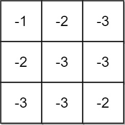
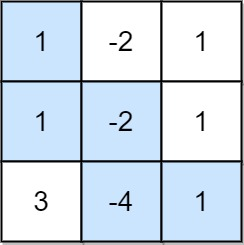
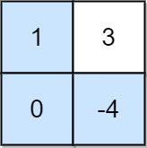

1594. 矩阵的最大非负积
路径 DP 同时维护到每格的最大积和最小积：负数乘负数会翻正，最小值也可能是将来的最大值。
思路
- 只能右/下走，到
(i,j)的候选来自上、左两格；每格先各算mx×v、mn×v，共最多 4 个候选。 - 新的
mx = 候选最大，mn = 候选最小——两个都必须留：负数格子会让最小积翻正（负负得正）。 - 路径最长 29 格、
|v| ≤ 4，|积| ≤ 4^29在long范围内，所以过程中不取模，最后才% 1e9+7。 - 终点
mx < 0说明所有路径积都是负数，返回-1；mx = 0是合法非负积。
图解
最优解
1class Solution {2 public int maxProductPath(int[][] grid) {3 final long MOD = 1_000_000_007L;4 int m = grid.length, n = grid[0].length;5 // 路径最多 29 格，|积| ≤ 4^29，long 装得下，所以过程中不取模6 // mx/mn：到 (i,j) 的最大、最小路径积——负数乘负数会翻正，两个都得留7 long[][] mx = new long[m][n], mn = new long[m][n];8 mx[0][0] = mn[0][0] = grid[0][0];9 for (int i = 0; i < m; i++) {10 for (int j = 0; j < n; j++) {11 if (i == 0 && j == 0) continue;12 long v = grid[i][j];13 long hi = Long.MIN_VALUE, lo = Long.MAX_VALUE; // 上/左两格各带两个候选14 if (i > 0) {15 hi = Math.max(hi, Math.max(mx[i - 1][j] * v, mn[i - 1][j] * v));16 lo = Math.min(lo, Math.min(mx[i - 1][j] * v, mn[i - 1][j] * v));17 }18 if (j > 0) {19 hi = Math.max(hi, Math.max(mx[i][j - 1] * v, mn[i][j - 1] * v));20 lo = Math.min(lo, Math.min(mx[i][j - 1] * v, mn[i][j - 1] * v));21 }22 mx[i][j] = hi;23 mn[i][j] = lo;24 }25 }26 // 最大积是负的说明所有路径都是负积27 if (mx[m - 1][n - 1] < 0) return -1;28 return (int) (mx[m - 1][n - 1] % MOD);29 }30}题目
给你一个大小为 m x n 的矩阵 grid 。最初，你位于左上角 (0, 0) ，每一步，你可以在矩阵中 向右 或 向下 移动。
在从左上角 (0, 0) 开始到右下角 (m - 1, n - 1) 结束的所有路径中，找出具有 最大非负积 的路径。路径的积是沿路径访问的单元格中所有整数的乘积。
返回 最大非负积 对 109 + 7 取余 的结果。如果最大积为 负数 ，则返回 -1 。
注意，取余是在得到最大积之后执行的。
示例 1：

输入：grid = [[-1,-2,-3],[-2,-3,-3],[-3,-3,-2]] 输出：-1 解释：从 (0, 0) 到 (2, 2) 的路径中无法得到非负积，所以返回 -1 。
示例 2：

输入：grid = [[1,-2,1],[1,-2,1],[3,-4,1]] 输出：8 解释：最大非负积对应的路径如图所示 (1 * 1 * -2 * -4 * 1 = 8)
示例 3：

输入：grid = [[1,3],[0,-4]] 输出：0 解释：最大非负积对应的路径如图所示 (1 * 0 * -4 = 0)
提示：
m == grid.lengthn == grid[i].length1 <= m, n <= 15-4 <= grid[i][j] <= 4
题面取自力扣当前版本。
数据快照 2026-11-04。题面版权归力扣所有，本站点仅供本人学习使用，请勿对外发布。